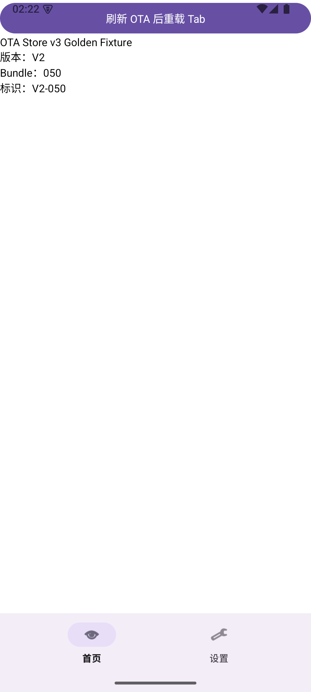
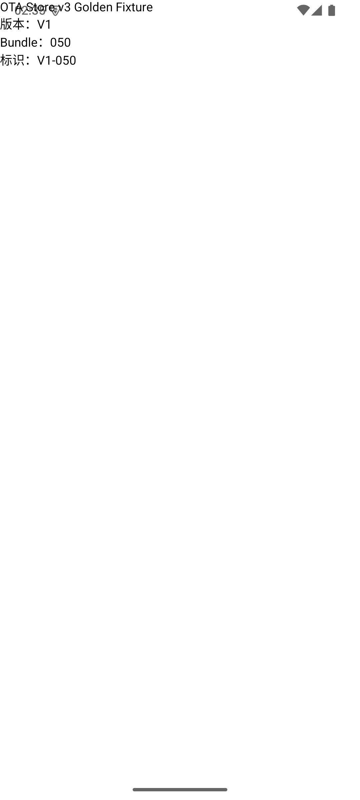
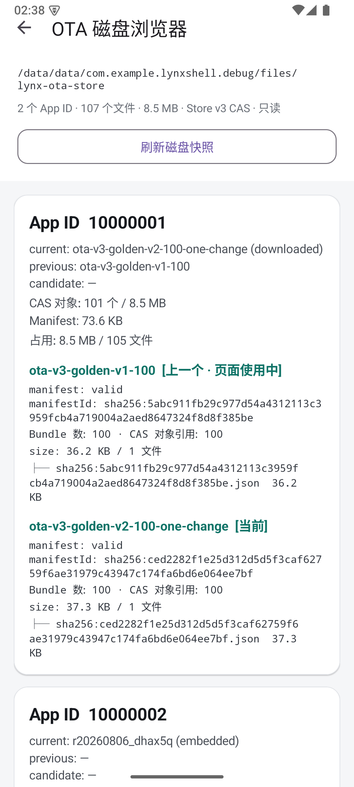
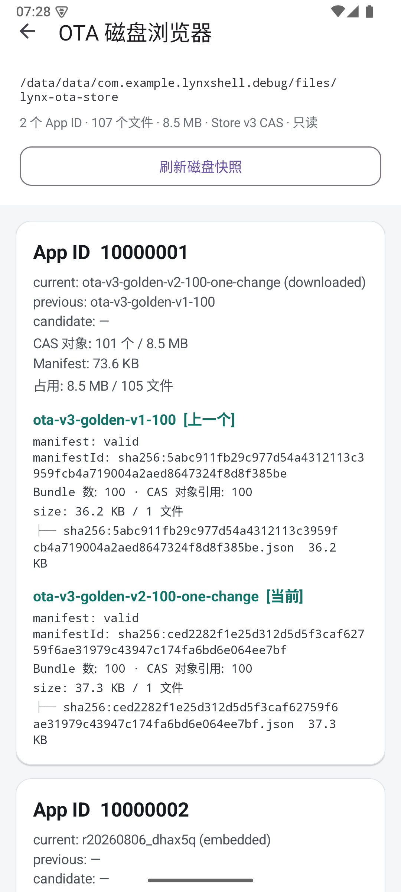

Lynx Navigation · OTA Store v3
Android OTA Store v3 测试报告
本报告记录 Android 端从空 Store 安装 100 个 Bundle、V1 → V2 单 Bundle 增量、CAS 对象复用、ETag、Activity 路由快照、原生 Fragment/BottomNavigation、candidate、坏 SHA 保护和设备磁盘证据。OTA 使用本地 Golden Fixture Server，未把外网服务不可达伪装成通过。
Android Gate核心链路通过
设备emulator-5554 / Android_SDK_built_for_arm64
系统Android API 35 / arm64
Fixtureota-store-v3-golden-100-v1-v2
App ID10000001（另含 10000002 embedded）
执行日期2026-08-31
一眼结论
47Android JVM 单测通过
0JVM 失败 / 跳过
100 → 1V1 全量 / V2 新增二进制请求
101V1+V2 去重后的 CAS 对象数
0未变化 Bundle 文件复制次数
200 / 304同进程 latest ETag 响应
Android Store v3 Gate：PASS（基于本地真实运行态）
100 个 Bundle 的完整 Manifest 没有被拆成“增量 Manifest”；客户端按 Manifest 中的 SHA-256 对象引用下载。V1 → V2 只变 050 时，真实服务指标只出现 1 个 Bundle GET，磁盘从 100 个对象变为 101 个；路由快照、Tab cache-only、主动刷新、candidate 和错误 SHA 保留旧 current 均已验证。
测试矩阵与实际结果
| 用例 | 动作 | 实际结果 | 证据层 |
|---|---|---|---|
| T01 Fixture | 验证 Android/跨端 V1、V2 Manifest | PASS：各 100 条，路径集合一致，仅 050 的 bytes/size/SHA 变化。 | verify-ota-store-v3-fixture.mjs |
| T10 首次 V1 | 卸载重装 Debug APK，启动本地 OTA | PASS：latest 1 次；100 个 Bundle；8,775,400 bytes；100 个 CAS 对象；1 份 Manifest；current=V1，previous=embedded。 | 模拟器 + 本地 Server metrics + OTA Storage Inspector |
| T11 V1 → V2 | 服务端切换 V2，点击“刷新 OTA 后重载 Tab” | PASS：Manifest 仍为 100 条；只请求 pages/10000001/bundle-050.lynx.bundle；87,754 bytes；新增 1 个对象；current=V2，previous=V1。 | 真实 HTTP + CAS 磁盘快照 + V2 页面截图 |
| T12 ETag | 启动收到 200 后，同一进程再次刷新 latest | PASS：本轮启动 latest=200；再次刷新返回 304；Bundle=0、bytes=0。 | 本地 Server metrics |
| T20 单独打开 | Activity-first 直接打开 bundle-050 | PASS：页面分别显示 V1-050、V2-050，实际加载文件与 Manifest SHA 一致。 | Android LynxView 运行态截图 |
| T21 Route Snapshot | 根页固定 V1；后台 current 切到 V2；同 session 打开子页 | PASS：子页仍显示 V1；State current 已是 V2；子页没有额外 Bundle 请求，证明路由不会跟随 current 漂移。 | 同 session Intent + previous lease + 截图 |
| T23 Tab cache-only | 原生 Fragment 的 Home/Settings 来回切换 | PASS：两个 Tab 显示同一 OTA V2；切换后 latest/bundle 请求均为 0；没有因为切 Tab 重新检查网络。 | Fragment + BottomNavigation 运行态 + Server metrics |
| T24 Tab 主动刷新 | 服务端切回 V1，点击“刷新 OTA 后重载 Tab” | PASS：current 变为 V1；两个 Fragment 都重新创建内容；Bundle 请求为 0，因为 V1 对象已在 CAS previous 中。 | Tab V1 截图 + State + metrics |
| T07 坏 SHA | V1 Manifest 将 050 SHA 改为全 0，再主动刷新 | PASS：只下载候选 050 后校验失败；提示 OTA 同步失败；current 仍为 V2；没有提交坏 Manifest/State。 | 异常日志 + State + Tab 截图 |
| T14 App ID 隔离 | 相同对象 SHA 放入 10000001/10000002 | PASS：两个 apps/<appId> 各自维护对象库，删除/GC/State 不跨 App ID 污染。 | Store v3 JVM 单测 |
| T15 Candidate | Debug candidate 模式启动、打开页面、首屏健康 | PASS：启动时 current=embedded, candidate=pending；页面进入 trial；首屏成功后 promote 为 current，candidate 被清理。 | Store v3 JVM 单测 |
| T16/T18 故障、回滚、删除 lease | Manifest 提交故障、回滚、显式删除和 active lease | PASS：v3 Manifest 故障不改 current；回滚使用 previous CAS；删除时 leased V1 仍可读，lease 关闭后才回收；全套 Android JVM 共 47/47 通过。 | JUnit XML + Store v3 测试 |
Android 运行态截图




磁盘与网络实证
V1 首次安装
latestRequestCount: 1 bundleRequestCount: 100 bundleBytes: 8775400 objects: 100 manifests: 1 state.current: ota-v3-golden-v1-100 state.previous: embedded:r20260823_qc8ffc
V2 单 Bundle 增量
latestRequestCount: 1 bundleRequestCount: 1 bundlePath: pages/10000001/bundle-050.lynx.bundle bundleBytes: 87754 objects: 101 manifests: 2 state.current: ota-v3-golden-v2-100-one-change state.previous: ota-v3-golden-v1-100
Store v3 真实目录
files/lynx-ota-store/apps/10000001/ ├─ state.json ├─ embedded.json ├─ manifests/<manifestId>.json ├─ objects/<sha 前两位>/<sha>.lynx.bundle └─ transactions/<tx>/ Inspector: 107 files / 8.5 MB 冷启动 V2：latest=1、Bundle=0、bytes=0 同进程 ETag：latest=304、Bundle=0、bytes=0
执行命令与复现方式
验证 Golden Fixture
node scripts/verify-ota-store-v3-fixture.mjs # result: PASS # bundleCount=100, changedBundleIndex=50, changedBundleCount=1
启动本地 OTA 服务
node scripts/ota-store-v3/local-server.mjs # 默认 http://127.0.0.1:18765 # Android emulator 通过 adb reverse 访问该 loopback 地址
Android JVM 测试
cd android JAVA_HOME="/Applications/Android Studio.app/Contents/jbr/Contents/Home" \ /Users/nieyutan/.gradle/wrapper/dists/gradle-8.14.4-bin/92wwslzcyst3phie3o264zltu/gradle-8.14.4/bin/gradle \ :lynx-shell:testDebugUnitTest --no-daemon # 47 tests completed, 0 failed
Android 模拟器 APK 验收
adb -P 5038 reverse tcp:18765 tcp:18765 adb -P 5038 install -r android/app/build/outputs/apk/debug/app-debug.apk adb -P 5038 shell am start -S -f 0x10008000 \ -n com.example.lynxshell.debug/com.example.lynxshell.sample.MainActivity \ --ez lynx_shell.show_native_launcher true # 通过 Launcher 打开 OTA 页面、原生 Tab 和磁盘 Inspector
剩余边界
- 本报告的 Android 真实网络链路使用本机 loopback Fixture Server；已真实覆盖 HTTP 请求、完整 Manifest、Bundle、SHA、CAS、State 和 LynxView，不等同于外网生产服务可达。
- 本轮使用 API 35 模拟器；没有把 Android 实体机、不同 OEM 文件系统和真实低磁盘 ENOSPC 写成已通过。
- candidate、Manifest fault、App ID 隔离和回滚已有 JVM/模拟器证据；candidate 本身使用 Debug 开关，普通 APK 默认关闭。
- 仓库没有 Gradle Wrapper；复现需要本机已有 Gradle 发行版和 Android Studio JBR。AGP/compileSdk 的兼容性提示不影响本次构建结果。
- HarmonyOS 已有独立的 v3 报告；本报告只描述 Android 当前运行态。